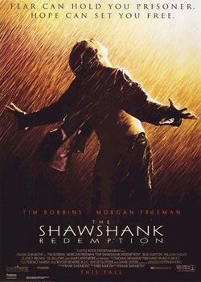

«Втеча з Шоушенка» (англ. The Shawshank Redemption; слово «redemption» може мати значення «порятунок», «звільнення», «спокута») — американський фільм-драма 1994, знятий режисером Френком Дарабонтом за повістю Стівена Кінга «Ріта Гейворт і втеча з Шоушенка» (англ. Rita Hayworth and Shawshank Redemption).
Станом на 14 жовтня 2017 року фільм займає 1-е місце у рейтингу фільмів за версією IMDb.
Сюжет
Молодий банківський працівник Енді Дюфрейн звинувачений у вбивстві своєї дружини і її коханця, якого він не скоював. Але докази проти нього — його засуджують до двох довічних термінів тюремного ув'язнення. Після вироку його поміщають до Шоушенка — однієї з найпохмуріших в'язниць Нової Англії. Начальник в'язниці Семюел Нортон демонструє показову релігійність, що не заважає йому займатися темними справами. Головний охоронець-садист Байрон Хедлі вже в першу ніч забиває на смерть одного з ув'язнених, які прибули разом з Дюфрейном. Незабаром Дюфрейн стає об'єктом сексуальних домагань групи ув'язнених, відомих як «Сестри». Але важкі умови його не зломили.
Енді подружився з чорношкірим в'язнем Редом, який завдяки своїм зв'язкам доставляє до в'язниці нелегальними каналами різні товари. Навіть у в'язниці Дюфрейн знаходить застосування своїм знанням: спочатку допомагає охоронцям заповнювати податкові декларації, потім його зауважує начальник тюрми і залучає до своїх фінансових махінацій. Дюфрейн зараховує ці гроші на рахунок людини, якої ніколи не існувало в реальності. Після того, як у результаті чергового нападу «Сестер» Енді опиняється в лікарні, охоронці роблять з ватажка «Сестер» інваліда, після чого Дюфрейну дають спокій.
Дюфрейн домагається виділення грошей і книг на розширення тюремної бібліотеки, допомагає отримати освіту іншим в'язням. Енді Дюфрейн не тільки вчить їх читати і писати, але впливає на їхню душу, змушує співчувати, співпереживати.
Одного разу Енді просить Реда дістати йому плакат з Рітою Гейворт, який вішає на стіну камери. Потім Риту змінює Мерилін Монро і, нарешті, плакат з фільму «Мільйон років до нашої ери» з Ракель Велч. Начальство в'язниці не звертає на цей факт особливої уваги, однак, за постером в стіні знаходиться діра, через яку Енді збирається тікати. Причому підготовку до втечі Енді починає, ледь почавши відбувати ув'язнення у в'язниці. У свої плани він не посвячує навіть найкращого друга Реда. Однак розповідає про те, чим і де хотів би займатися, якби вийшов на волю.
Одного разу до в'язниці потрапляє хлопчисько Томмі Вільямс — балакун, душа компанії, любитель рок-н-ролу, якому Енді намагається допомогти, як і іншим, оскільки виявляє, що молода людина має здібності не тільки до крадіжок. Від нього Енді дізнається, що під час чергової відсидки той перебував в одній камері зі справжнім вбивцею його дружини, від якого і дізнався подробиці злочину. Енді намагається умовити начальника в'язниці допомогти у перегляді його справи, але йому відмовляють, оскільки Енді замішаний у темні справи начальника в'язниці Шоушенка. Енді при розмові з начальником ображає його і потрапляє в карцер.
Томмі, сам того не знаючи, своєю балакучістю підписав собі смертний вирок. Начальник в'язниці вбиває Томмі, інсценуючи спробу втечі. Вбивство Томмі стало вирішальним поштовхом для втечі. Зрозумівши, що йому ніколи не вийти з ув'язнення, Дюфрейн здійснює втечу. З собою Енді забирає всі матеріали про афери начальника тюрми. Відвідавши банк, Енді пред'являє документи на ім'я створеної ним людини і отримує гроші директора. Матеріали про злочини керівництва Шоушенка Дюфрейн відправляє в газету. Підсумок — головний охоронець арештований, начальник в'язниці кінчає життя самогубством.
Якийсь час опісля Ред отримує чисту листівку від Енді зі штемпелем містечка неподалік від мексиканського кордону. На черговій комісії з помилування Ред виходить на свободу. Вийшовши на свободу, Ред якийсь час працює в магазині, потім вирішує їхати до Енді. Фінальна картина — Ред босоніж йде по пляжу, на віддалі на піску катер, який лагодить Енді Дюфрейн.
Нагороди
- Кінопремія Японії за іноземний фільм.
- Премія видання «Хоті» (Японія) за іноземний фільм.
- Премія видання «Маініті» (Японія) за іноземний фільм.
- 2 премії видання «кинемо Дзунпо» (Японія): премія редакції за іноземний фільм і премія читачів за іноземний фільм.
- Премія «Студійне Кришталеве серце» на МКФ «Країна серця» (США).
- Премія «Клотрудіс» (США) за чоловічу роль (Морган Фрімен).
- Премія Американського Товариства кінооператорів за роботу оператора в повнометражному кінофільмі (Роджер Дікінс).
- Премія «Бронзова жаба» на МКФ кінооператорского мистецтва «Камерімаж» (Польща).
- Приз «Гюменітас» (США) в категорії «повнометражний кінофільм».
- Премія USC (США) за сценарій (Стівен Кінг — автор, Френк Дерабонт — сценарист).
Сім номінацій на Оскар:
- Найкращий фільм
- Найкраща чоловіча роль (Морган Фрімен)
- Найкращий адаптований сценарій
- Найкраща робота оператора
- Найкращий звук
- Найкращий монтаж
- Найкращий оригінальний саундтрек